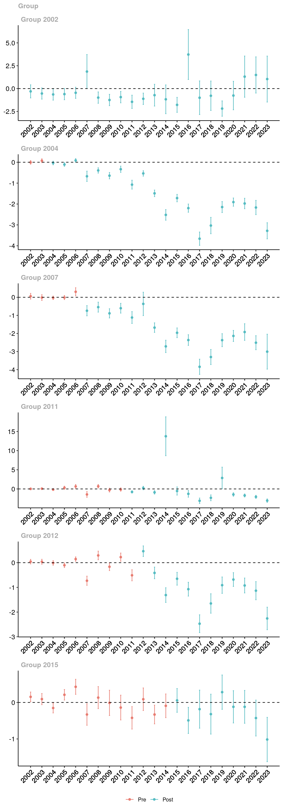
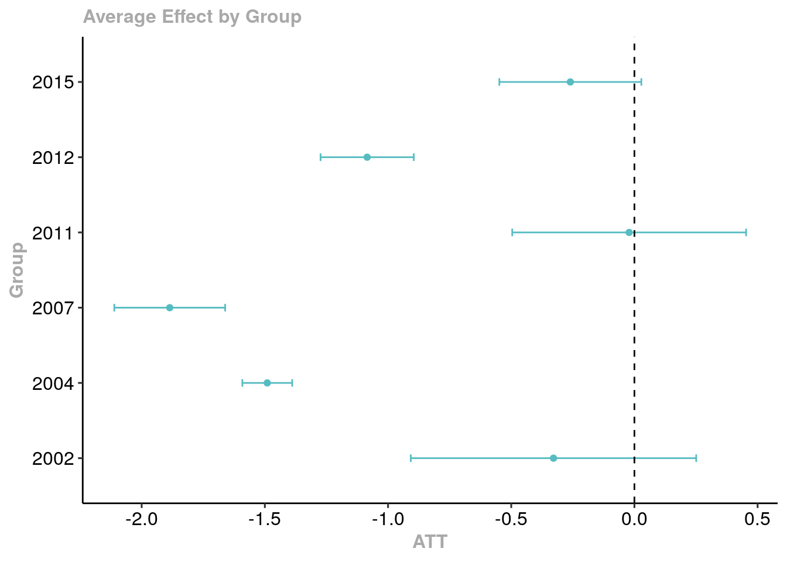

Pour cette analyse, nous allons appliquer la méthode des doubles différences pour estimer l’impact des aires protégées sur la déforestation à Madagascar entre 2000 et 2021. Cette méthode est particulièrement utile lorsque l’intervention (la création des aires protégées) a lieu à des dates différentes pour chaque unité d’observation, ce que l’on appelle un échelonnement (staggered diff-in-diff). La méthode proposée par Callaway et Sant’Anna (2021b) permet de gérer cette situation en utilisant une approche qui tient compte de ces dates de mise en œuvre différentes. Le package {did} (Callaway and Sant’Anna 2021a) en R permet d’appliquer cette méthode facilement.
9.2 Application aux mailles de territoire
Dans cette section, nous appliquons la méthode des doubles différences aux mailles de territoire pour évaluer l’effet des aires protégées sur la réduction de la déforestation. Nous allons d’abord préparer les données afin de les rendre conformes aux exigences de la fonction att_gt() du package {did}.
Nous travaillons avec un jeu de données spatial qui représente des mailles de 1 km² chacune, et nous avons des informations sur la couverture forestière pour chaque année. Le traitement consiste à identifier les mailles qui sont “intérieures” aux aires protégées (traitées) par rapport aux autres (non traitées).
Code
library(did) # Pour des doubles-différences échelonnéeslibrary(tidyverse) # Pur faciliter la manipulation de donnéeslibrary(lubridate) # Pour modifier les dateslibrary(gt) # Pour de jolis tableauxlibrary(mapme.biodiversity) # Pour réutiliser des fonctions portfolio_longlibrary(sf) # Pour des opérations spatiales sur vecteurs# On charge les données par mailles créées précédemmentgrille_matched <-read_rds("data/grille_matched.rds")# Dans la version ci-dessus, on n'a gardé que les données de déforestation# par année. On va récupérer dans la version précédente, le calcul qu'on avait pour toutes les annéesgrille_mada_mapme <-read_rds("data/grille_mada_mapme.rds")# On isole l'identifiant de la cellule et les indicateurs de perte de couvert forestiertreecover_data <- grille_mada_mapme %>%st_drop_geometry() %>%select(assetid, treecover_area)# On incorpore les données détaillées de couvert forestier dans les données matchéesgrille_matched <- grille_matched %>%left_join(treecover_data, by ="assetid")
Ici, nous avons associé les données sur la perte de couverture forestière à chaque maille correspondant aux aires protégées et aux zones non protégées.
Ensuite, nous transformons les données en format long pour pouvoir suivre l’évolution de la couverture forestière au fil du temps. Cela permet de calculer le taux de déforestation annuel comme un pourcentage du couvert forestier initial pour chaque maille.
Code
# On va utiliser matchit pour "déplier" en mode long l'évolution du couvert forestier# On indique qu'il s'agit d'un objet de type mapme.biodiversity pour pouvoir # utiliser la fonction portfolio_longclass(grille_matched) <-class(grille_mada_mapme) # On passe maintenant en format longgrille_matched <- grille_matched %>%portfolio_long() %>%rename(treecover = value) %>%mutate(years =year(datetime)) %>%arrange(assetid, years) %>%# On remet bien dans l'ordre pour que les années se suivent# On calcule le taux de déforestation en %mutate(tx_defor =ifelse(assetid!=lag(assetid), NA, -((treecover -lag(treecover)) /lag(treecover))*100))
Exercice : - pour explorer le jeu de données grilles_matched, groupez les données par statut de traitement traitement et année de création an_creation. Que remarquez-vous ?
9.2.1 Estimation des effets moyens du traitement
Nous utilisons la fonction att_gt() pour estimer l’effet moyen du traitement (ATT) sur le taux de déforestation au fil du temps. Les poids provenant du processus de matching sont utilisés pour ajuster les estimations.
La fonction ggdid() permet de visualiser les résultats obtenus. Les graphiques suivants montrent l’évolution de l’ATT au fil du temps, ce qui nous permet d’observer l’impact des aires protégées sur la déforestation. Attention : il s’agit ici d’une première estimation à des fins didactiques, sans variables de contrôle.
Code
# Les mailles en dehors des aires protégées sont considérées comme jamais traitéesgrille_matched <- grille_matched %>%mutate(time_treated =ifelse(position_ap =="Intérieur", an_creation, 0))# Calculer le DID en utilisant la fonction `att_gt`did_result <-att_gt(yname ="tx_defor", # variable de résultattname ="years", # Variable de tempsidname ="assetid", # ID des unitésgname ="time_treated", # Temps de traitement weightsname ="weights", # Poids issus du matchingdata = grille_matched,panel =TRUE) # panel veut dire qu'on suit les mêmes unités# Plot the results to visualize the ATT over timeggdid(did_result) +theme(axis.text.x =element_text(angle =45, hjust =1))

Exercice : Analysez et commentez ce résultat.
9.2.2 Agrégation des résultats
Nous pouvons également agréger les résultats pour obtenir une estimation globale des effets moyens du traitement par “cohorte” d’année de création des aires protégées.
Code
# Aggregate the ATT resultsagg_att_mailles <-aggte(did_result, type ="group")# Display the aggregated resultssummary(agg_att_mailles)
Call:
aggte(MP = did_result, type = "group")
Reference: Callaway, Brantly and Pedro H.C. Sant'Anna. "Difference-in-Differences with Multiple Time Periods." Journal of Econometrics, Vol. 225, No. 2, pp. 200-230, 2021. <https://doi.org/10.1016/j.jeconom.2020.12.001>, <https://arxiv.org/abs/1803.09015>
Overall summary of ATT's based on group/cohort aggregation:
ATT Std. Error [ 95% Conf. Int.]
-0.3733 0.0945 -0.5585 -0.1882 *
Group Effects:
Group Estimate Std. Error [95% Simult. Conf. Band]
2002 -0.3285 0.2188 -0.9186 0.2617
2004 -1.4903 0.0334 -1.5802 -1.4003 *
2007 -1.8861 0.0762 -2.0916 -1.6806 *
2011 -0.0214 0.1880 -0.5284 0.4856
2012 -1.0847 0.0738 -1.2838 -0.8857 *
2015 -0.2601 0.1059 -0.5456 0.0255
---
Signif. codes: `*' confidence band does not cover 0
Control Group: Never Treated, Anticipation Periods: 0
Estimation Method: Doubly Robust
Code
# Visualisation du résultatggdid(agg_att_mailles)

Exercice : Analysez et commentez ce résultat
L’analyse précédente ne tient pas compte de certains facteurs dont on a vu qu’ils pouvaient influencer à la fois la sélection, mais aussi la déforestation, en particulier l’altitude, la pente, le temps de parcours à la ville la plus proche, ou encore la densité de population.
Exercice reprenez la fonction att_gt() ci-dessus et consultez la documentation pour voir comment ajouter des covariables. Ajoutez les covariables qui vous semblent pertinente et calculez puis interprétez les résultats.